Problem
こんな状態で
止まっていませんか？
スレッズを始めてみたいけど、何を投稿したらいいかわからない。
投稿してみたけど反応が少なくて、このまま続ける意味があるのか不安。
たまに投稿が伸びても、LINE登録や商品・サービスにつながらない。
「スレッズが集客にいいらしい」と聞くけれど、
自分のビジネスにどう活かせばいいのかわからない。
そんなふうに感じているなら、必要なのは、ただ投稿数を増やすことではありません。
Flow
大事なのは、
スレッズの“流れ”を知ること
スレッズ集客で大切なのは、思いついたことを投稿し続けることではなく、 反応が取れる投稿を作り、プロフィールを見てもらい、固定投稿や登録プレゼントからリストにつなげる流れを作ること。
- どんな投稿が伸びやすいのか
- 誰に向けて発信するのか
- 反応が出たあとに何を見てもらうのか
- どうやってリストにつなげるのか
このチャレンジでは、その流れを7日間で一緒に作っていきます。
Goal
7日間後には、
こんな状態を目指します
完璧に作り込む必要はありません。まずは7日間で、「こうやって投稿すればいいんだ」「こうやってリストにつなげればいいんだ」という流れを体感していきましょう。
Output
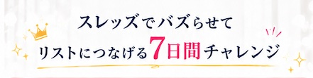
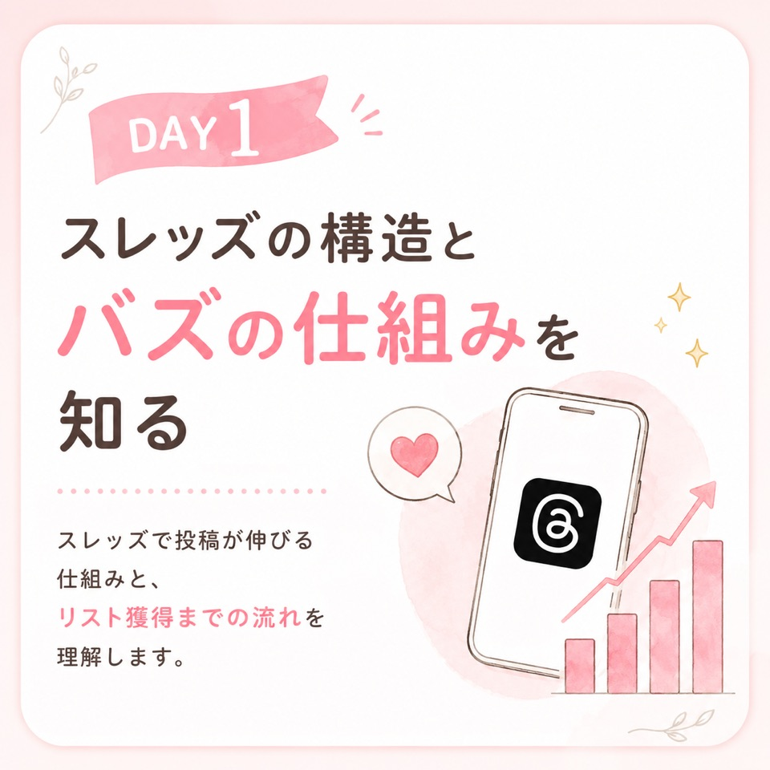
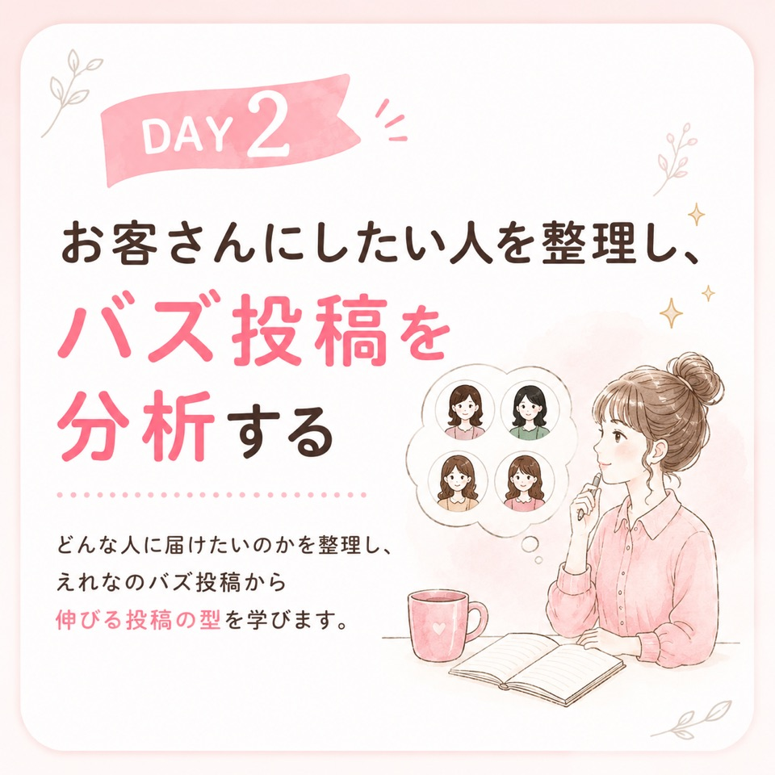
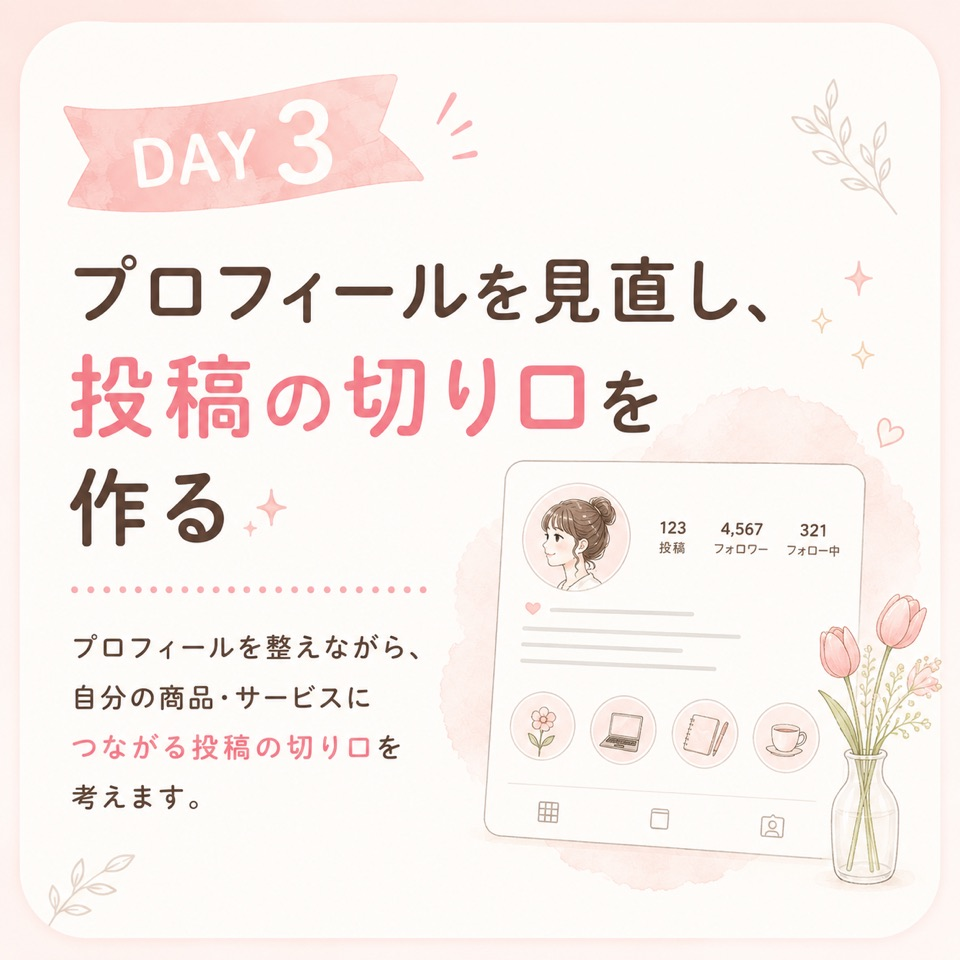
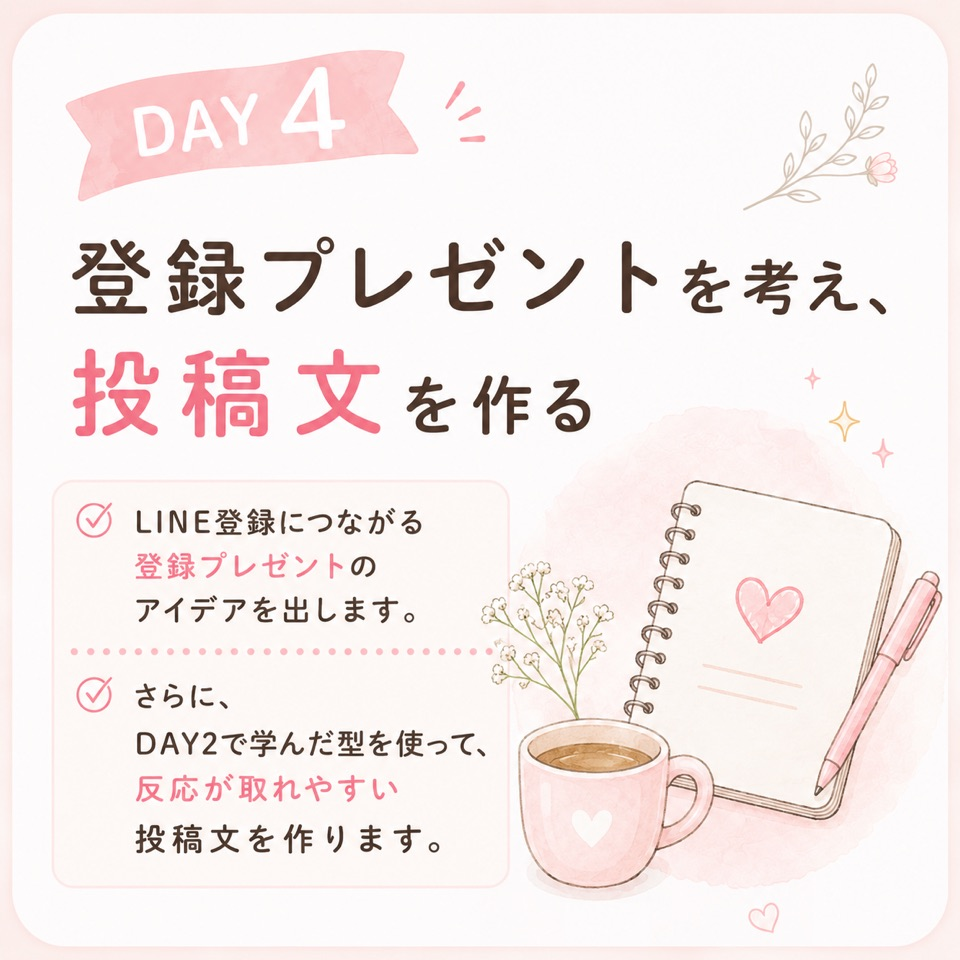
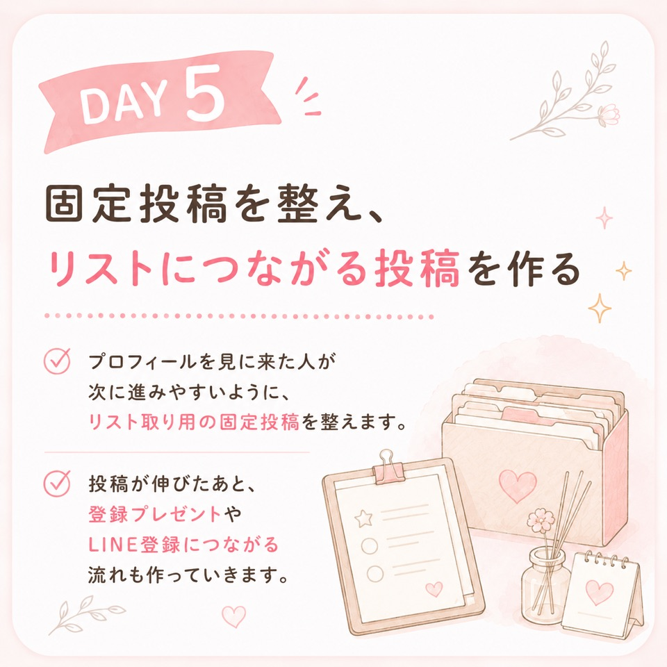
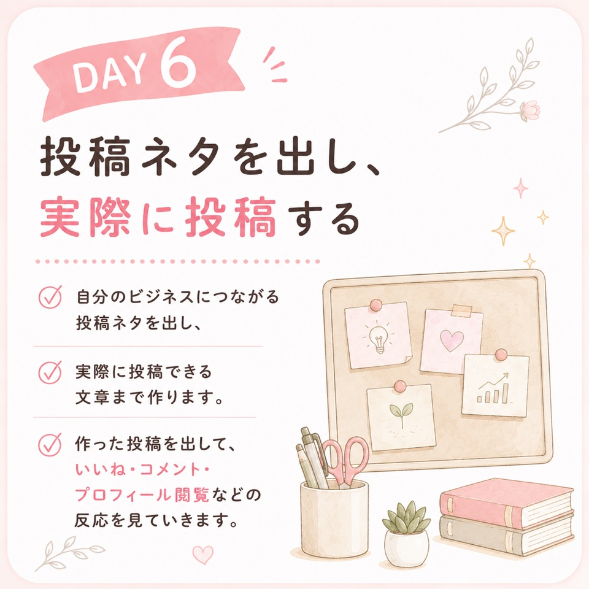
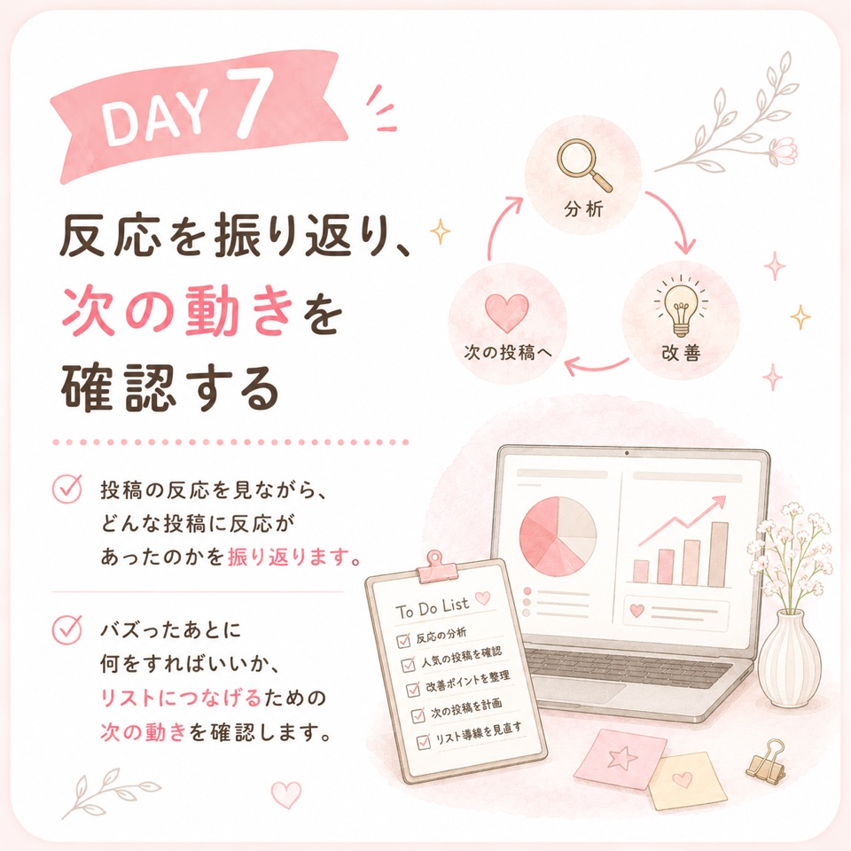
7日間でできること
- どんな人をお客さんにしたいのか整理
- プロフィールの見直し
- 登録プレゼントのアイデア
- リスト取り用の固定投稿
- 自分の商品・サービスにつながる投稿ネタ
- 実際に投稿できる投稿文
- バズ投稿をモデリングする視点
- 投稿して反応を見る習慣
- バズ後に何をすればいいかのチェックリスト
最初から完璧を目指さなくてOK
まずは仮で作る。一度投稿してみる。反応を見る。必要に応じて直す。この流れを体験することで、スレッズを「なんとなく投稿する場所」から「未来のお客さまと出会う場所」に変えていきます。
参加特典
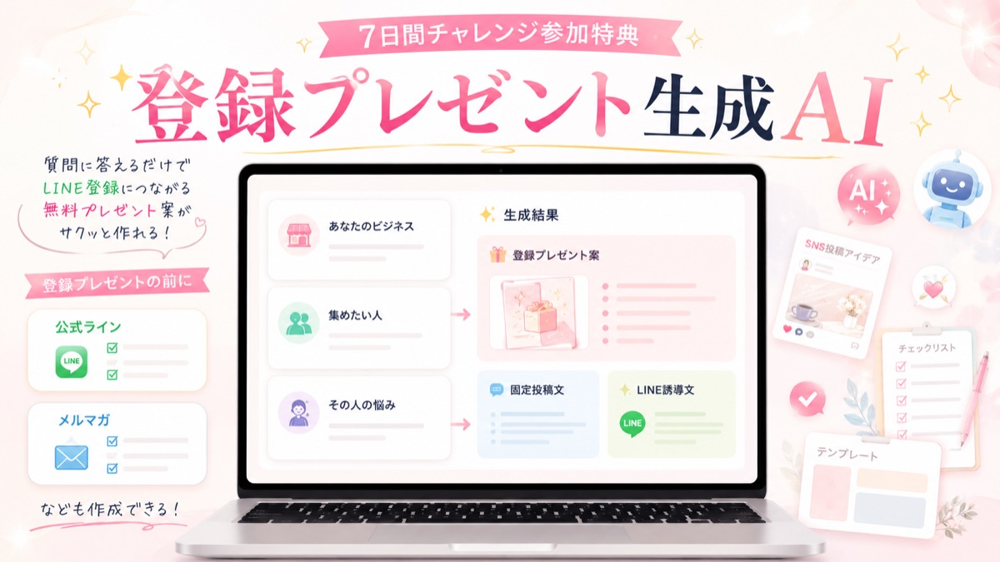
7日間チャレンジ参加者限定
登録プレゼント生成AI
質問に答えるだけで、あなたのビジネスやお客さんに合わせた
LINE登録につながる登録プレゼント案を作れます。
無料プレゼントのアイデアが出せる
固定投稿やLINE誘導文のヒントになる
AIを使いながら入口づくりを進められる
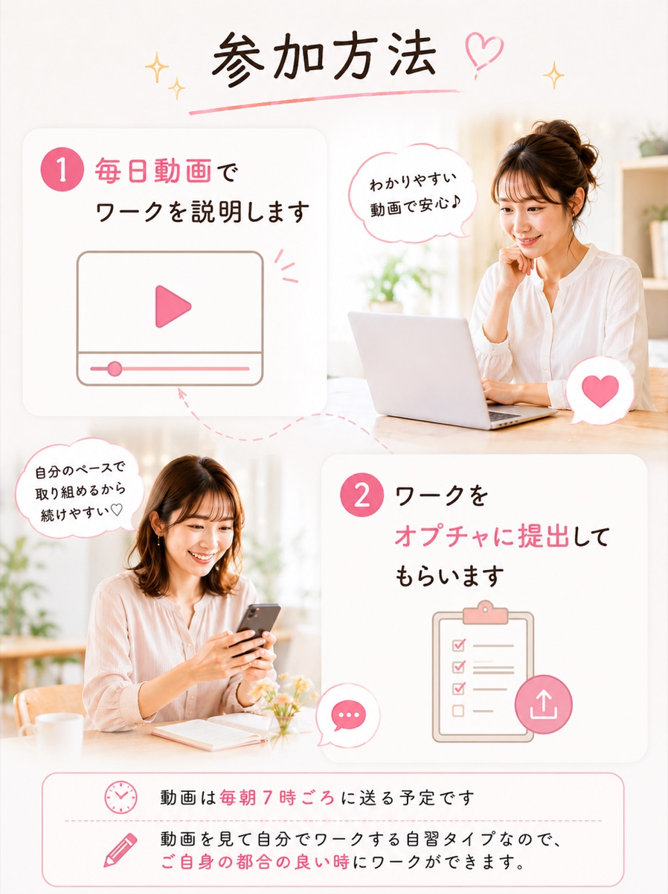
Community
みんなでやるから、
投稿できる・頑張れる
スレッズは、1人で続けようとすると、つい後回しになったり、反応が怖くて手が止まったりしがちです。
でも、同じ7日間に取り組む仲間がいると、「私も投稿しよう」「今日のワークやろう」と自然に前に進みやすくなります。
Policy
このチャレンジで
大事にしていること
このチャレンジは、「とにかく毎日投稿しましょう」という講座ではありません。
もちろん投稿することは大事です。でも、むやみに投稿を増やすだけでは、反応が取れなかったり、反応が取れてもビジネスにつながらなかったりします。
誰に届けるのか。
どんな反応を取りたいのか。
その反応をどこにつなげるのか。
この7日間では、スレッズの構造を理解しながら、意図して反応が取れる投稿を作り、バズらせる体験をし、投稿からリスト獲得までの流れを実際に作っていきます。
Benefit
参加すると
得られること
スレッズをただ思ったことを投稿する場所ではなく、見込み客リストにつなげる入口として考えられるようになります。
- スレッズで伸びる投稿の考え方がわかる
- 意図してバズを狙い、リスト獲得につながる投稿を作れるようになる
- 商品・サービスにつながる投稿ネタが出せる
- プロフィールや固定投稿を整えられる
- 登録プレゼントのアイデアが出せる
- 反応をリスト獲得につなげる流れがわかる
「スレッズ、ちゃんと使えたら集客につながりそう」と思っている人に、ぴったりの入口講座です。
For You
こんな人に
おすすめです
講師、コンサル、教室、サロン運営、個人事業主の方におすすめです。
Not For
こんな人には
おすすめしません
- オンライン秘書など、クライアントワークを中心に活動している方 今回の内容は、自分の商品・講座・サービスを持っているホルダーさん向けです。
- Instagramアカウントの作成からサポートしてほしい方
- 参加するだけで成果が出ると思っている方
- すでにInstagramやスレッズから十分なリストが取れている方
- すぐに売上やLINE登録が増える保証を求めている方
- グルコンや個別添削など、手取り足取りのサポートを期待している方 しっかり伴走してほしい方には、別講座をおすすめしています。
スレッズにまだ1投稿もしていなくても大丈夫です。ただし、アカウントを作成の上ご参加ください。
Information
開催概要
期間
7日間 2026年6月9日（火）〜6月15日（月）- 動画教材
- 毎日5〜10分前後の短い動画でワークを説明
- ワーク
- 毎日みんなで楽しみながら提出
- 交流・提出場所
- LINEオープンチャット
Price
9,980円（税込）
7日間チャレンジに参加する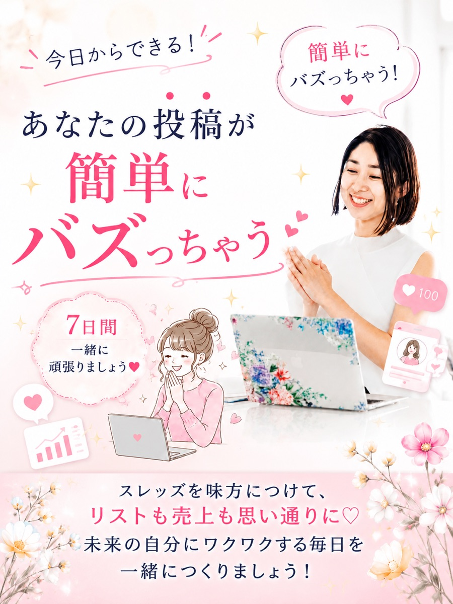
スレッズを、
ただ投稿するだけで終わらせない。
むやみに投稿する状態を抜け出して、意図して反応が取れる投稿を作り、その反応を見込み客リストにつなげる流れを作っていきましょう。
スレッズをバズらせてリストにつなげる
7日間集中チャレンジ